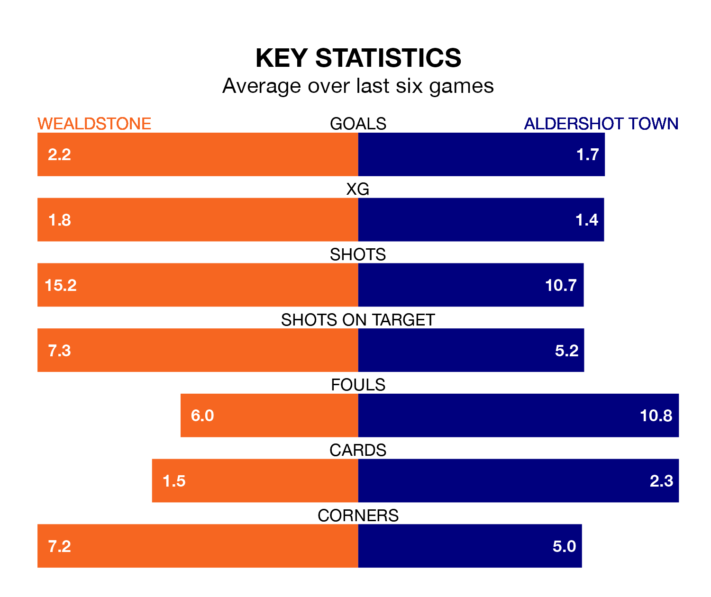

Wealdstone host Aldershot Town on Tuesday at Ruislip Manor Sports & Social Club in National League.
In their last league match, on Saturday, Wealdstone beat Halifax Town 2-0 at home, with goals from Aaron Henry and Tahvon Campbell.
Aldershot also won, 3-1 at home against Rochdale, with Cian Harries, Jack Barham and Lorent Tolaj on the scoresheet.
With 51 goals in 29 games so far this season, Aldershot are scoring more than average in the league with 1.8 goals per game. But they are conceding more than average too, letting in 53 goals at a rate of 1.8 per game.
Wealdstone, meanwhile, are below average scorers, with 1.4 goals per game, compared to a league average of 1.5. They have also conceded 1.4 goals per game.
In the last 10 years, Wealdstone and Aldershot have played each other on seven occasions. Wealdstone won two of them, Aldershot four, and they drew once.
On average, Wealdstone scored 1.6 goals and the Shots 2.0 in those matches.
Their last meeting was on August 26, when Aldershot won 3-1 at home.
The home side are in good form in National League, with four wins and a draw from their last six games.
With two wins and two draws over that period, Town's form is worse – they have taken eight points from 18, compared to Wealdstone's 13.
The Shots are eighth in the table after 29 games, of which they have won 13 and drawn five, earning 44 points.
Wealdstone are six places behind the visitors in 14th, with 10 wins and six draws putting them on 36 points.
Updated: 09:21 (UTC), 30/01/24